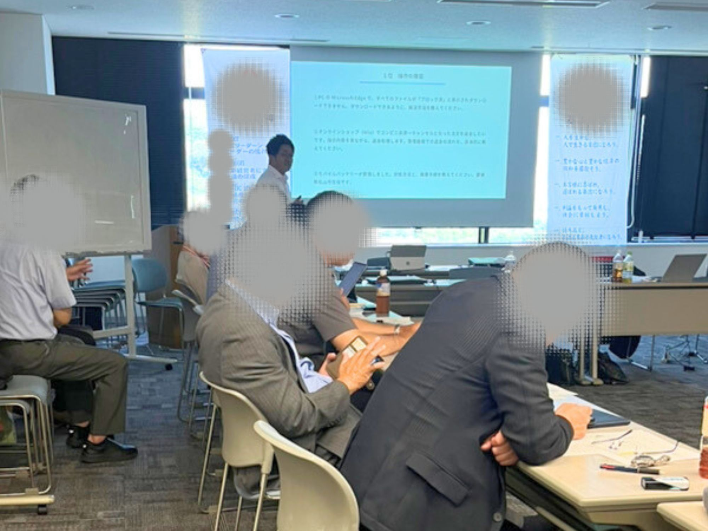

AIの導入・活用・仕組み化で、経営者の手間と迷いを減らす。
愛媛・松山から、中小企業のAI活用を支援します。
迷いを減らし
実行を増やす
Problem
原因は、ツールではなく「整理」の不足。
Cirasは御社の業務を見て、減らせる仕事から一緒に手を付けます。
Service
Free Diagnostic
1〜2分の質問に答えるだけ。AIがその場で分析し、提案をお届けします。
Why Ciras
相談先がないまま進めるほど、手戻りと迷いが増えます。
2030

Seminar
オンライン・対面で定期開催。企業研修や外部講師としても登壇しています。

Blog
ChatGPTやPerplexityなどのAI検索で自社が引用されるために。中小企業が今すぐ始められるAI検索対策を実務目線で解説。
2026.2.14 Web運用Wixで作っていた自社サイトをHTML＋CSSに書き換えてCloudflare Pagesに移行。表示速度・SEO・運用コストの変化。
2026.2.14 お知らせ「AI活用レベル診断」と「Webサイト状況診断」の2つの無料ツールを公開。質問に答えるだけでAIが診断します。
2026.2.12「何から手をつければいいか」からで構いません。
状況を整理して、次にやることを一緒に決めます。